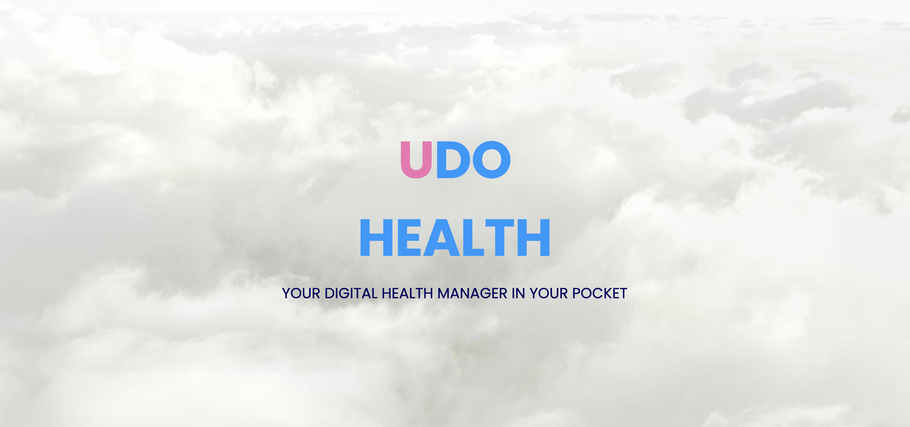
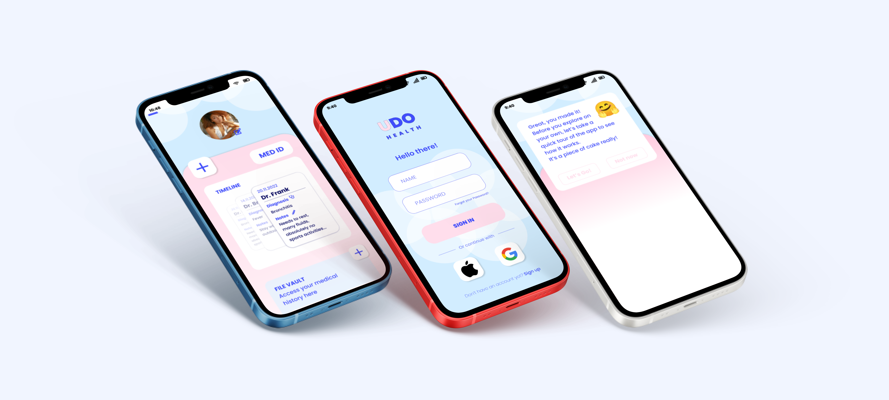
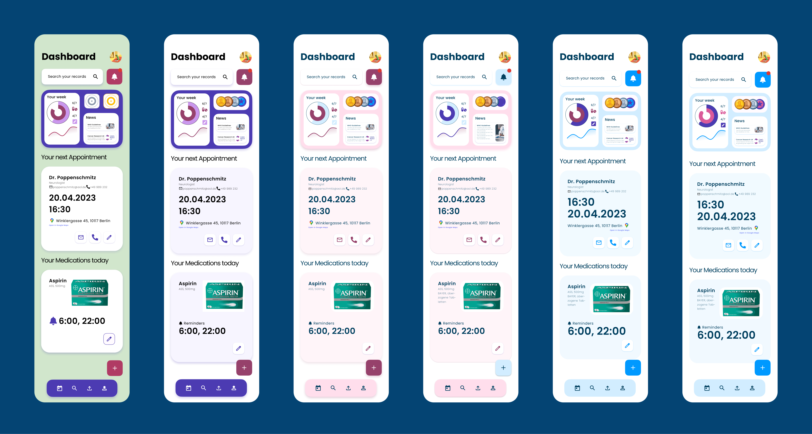
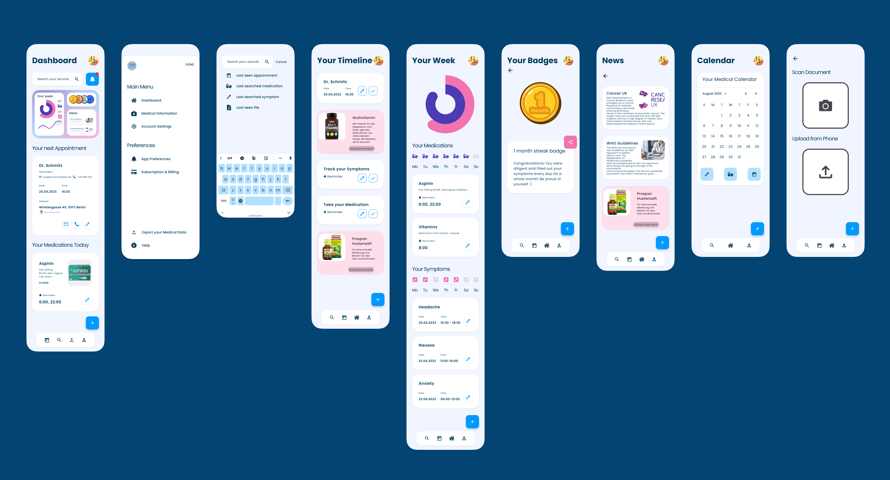

J B Design — 23
EN
/
DE
HOME

UDO Health
App Design
{{ $t('projectShowcase.selectedProjects') }}
{{ $t('projectShowcase.project1.title') }}

{{ $t('projectShowcase.project2.title') }}

{{ $t('projectShowcase.project3.title') }}

{{ $t('imageGallery.title') }}
{{ $t('prototype.title') }}
{{ $t('socialContact.lookingForDev') }}
{{ $t('socialContact.getInTouch') }}
HIRE ME